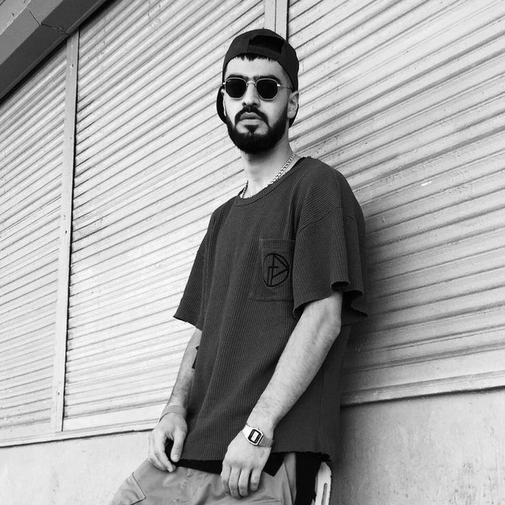

Miyagi

Биография Miyagi
Азамат Кудзаев — рэп-исполнитель, известный под псевдонимом MiyaGi. Он выступает в дуэте с Сосланом Бурнацевым aka Эндшпиль.
Биография Miyagi
Детство
- Мальчик рос человеком разносторонним: увлекался чтением и занимался единоборствами. И то, и другое сыграло немаловажную роль в его дальнейшей жизни. Сам Азамат лишь раз упомянул о случае, когда в семь лет оказался на краю гибели, попав под трамвай, но даже об этой ситуации он рассказал исключительно в связи с получением диплома: артист имеет высшее медицинское образование, мог бы стать хорошим пластическим хирургом или ортопедом. Имея знания и навыки оказания медицинской помощи, он не единожды спасал близких от смерти. Но по велению сердца Азамат не стал идти по стопам отца и честно сказал ему об этом.
Личная жизнь
- Впитавший с молоком матери принцип не афишировать свою личную жизнь, артист не говорит о своей семье. Одно время из немногочисленных реплик его друзей и отца было известно только, что у него есть сын, который родился в 2016 году, и жена – официальная или нет, доподлинно не известно. Отец музыканта Казбек Кудзаев говорил журналистам, что в Питер его сын уехал вместе с возлюбленной, называл её невесткой, и открыл публике, что она так же, как и Азамат, получила медицинское образование (в области гинекологии). Впоследствии поклонники выяснили имя жены Мияги – Илона Тускаева. Именно ей посвящены композиции «Бонни» и «Моя жена». 7 сентября 2017 года произошло событие, разделившее жизнь артиста на «до» и «после». Полуторагодовалый сын Мияги выпал из окна на девятом этаже. Малыш залез на подоконник, пока его мама была в другой комнате, потянул за ручку окна, оно распахнулось. Шансов выжить у мальчика не было – он упал на асфальт у подъезда. Убитый горем отец примчался домой и в состоянии аффекта принялся крушить все, что попадалось на глаза, повредив руку. Из-за трагедии лейбл Hajime Records объявил перерыв в деятельности, надеясь на понимание поклонников.